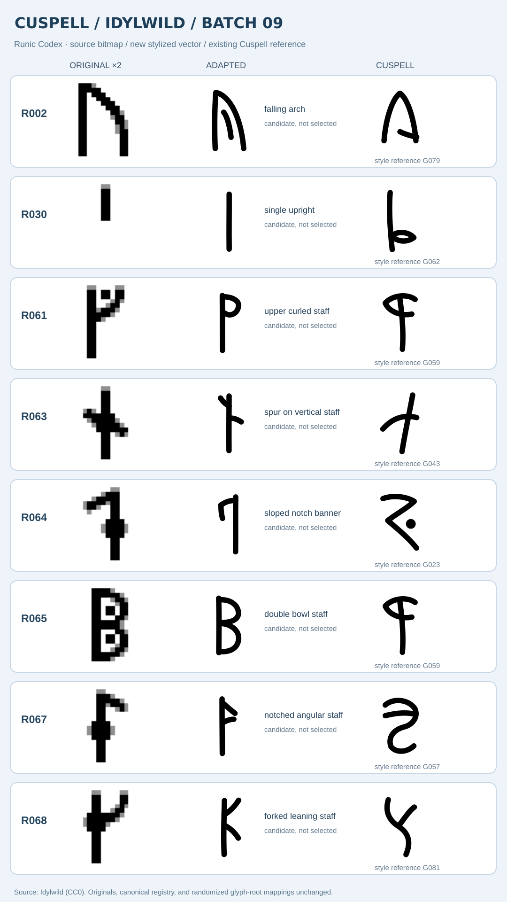
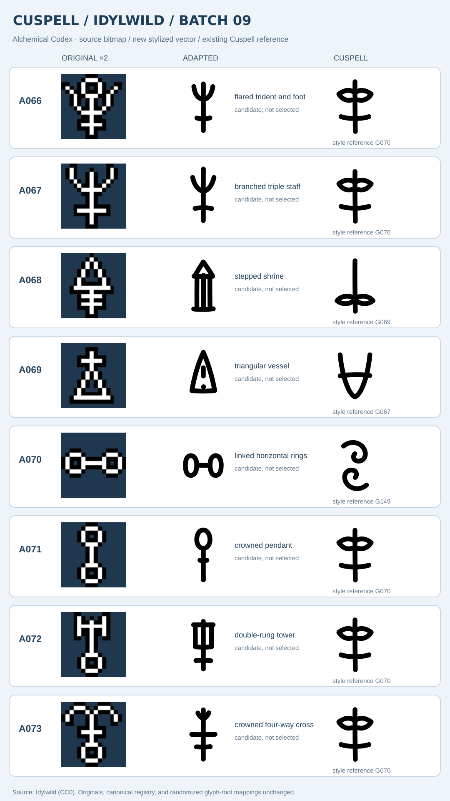

Each row: untouched Idylwild source pixels → new Cuspell-style vector → current canonical Cuspell visual reference. The G-series symbol is for style context, not a meaning or proposed replacement.
Runic source comparisons

Alchemical source comparisons

All original CC0 art, glyph registry, and assignments unchanged.